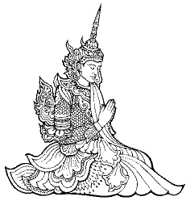

Explanation of the DiscourseThe IntroductionMany discourses begin, “Thus have I heard.” These were the words uttered by Venerable Ānanda when questioned by Venerable Mahākassapa regarding the Mangala Sutta. “Where was the discourse given, about what, by whom, to whom?” So Venerable Ānanda began by relating that
at one time the Blessed One was staying at Sāvatthï, in Prince Jeta’s grove donated by Anāthapindika. Then, late in the night, a certain deity approached the Blessed One, illuminating the Jeta grove with his radiance. Having worshipped the Blessed One, the deity stood respectfully at one side and asked, “Many gods and men have pondered on blessings or auspicious signs (mangala). Please tell us which are the most auspicious signs for one’s welfare and future prosperity.”
The commentary explains that at that time in India, people held many superstitious beliefs regarding portents and omens that foretold success or failure. People could not agree with one another, and the deities were also debating this matter without any satisfactory resolution. Therefore, the deity approached the Blessed One for a definitive answer. The first verse is this deity’s question. The
Buddha replied with a graduated discourse in verse, enumerating thirty-eight practical blessings. 1. Not to Associate with FoolsThose who do not observe basic morality are called fools. One may be learned in the sense of knowing Dhamma, Vinaya, and Abhidhamma, but
if one does not observe moral conduct, one is a fool since shameless and immoral behaviour leads to suffering in this life and the next. Fools hold wrong views, that is why they do immoral deeds, and neglect to do wholesome deeds. In the ultimate sense, not to associate with fools means to remain aloof from foolishness. Whenever one meets others, one should focus on and encourage wise
conduct, and overlook or discourage foolish conduct. 2. To Associate with the WiseConversely, the wise are those who observe basic morality carefully. The wise cultivate wholesome deeds such as charity, morality, meditation, reverence, service, learning the Dhamma,
etc., and they hold right views. Wise friends restrain us from evil and urge us to do good. In the ultimate sense, to associate with the wise means to reflect constantly on the qualities of the Buddha, Dhamma, and Sangha. 3. To Honour Those Worthy of Honour
People are worthy of honour for many reasons. One should respect those who provide material and spiritual benefits: parents, teachers, employers, monks, public servants, etc. One should also respect those with more refined morality, greater learning, or greater age. Respect may be shown in various ways, by service, homage, etc. 4. Living in a Suitable LocalityTo fulfil the preceding three blessings, one should live in the right place. In some places it is difficult to meet wise and learned teachers who can explain the deeper meaning of the Dhamma. Wherever Buddhism has become well-established there will be many qualified Dhamma teachers,
but there will also be many selfish teachers who emphasise charity for the sake of their own material welfare. In general, people get the kind of teacher that they deserve. If you are living close to a wise teacher, it is a rare and great blessing. 5. Good Deeds Done in the PastTo have the power to choose where to live, and who to associate with, one must have accumulated merits in the past. Most people have a limited choice, and so have to live wherever they can find regular employment and an affordable home. It is very rare indeed to meet a living Buddha or even to hear his genuine teaching. Even if one is born in a Buddhist country, a truly wise teacher is hard to come across, and his time is always in
great demand. One who has done many meritorious deeds is born in a devout Buddhist family and gets many opportunities to learn and practice the Dhamma. One who is more interested in sensual pleasures will not gravitate towards Dhamma centres. 6. Setting Oneself in the Right CourseIt takes wisdom and patience to build good character. One who fulfils all of the preceding blessings, will be naturally inclined to cultivate virtue, but most people will have to make special efforts to avoid wrong doing and correct their defects. Knowing one’s faults is a good start, but we need great humility, honesty, and patience to correct ourselves. “Whoever was heedless before, but afterwards is not,
he illumines this world like the full moon freed from clouds.” (Dhp v 172)
7. Great LearningThe Buddha’s teaching is profound and difficult to understand properly, let alone to practise and realise for oneself. We are very fortunate to have excellent translations of the Buddha’s teachings in English, and many other books by eminent meditation masters. We should study the Dhamma
whenever possible to deepen and broaden our knowledge. Study, practice, and realisation are all necessary unless we live with an enlightened teacher. In that case, if we practice hard, realisation will follow without study. 8. Practical SkillIntellectual knowledge
is not the same as practical skill. One can read and write cookery books without being a good cook. Another person may be able to cook very well indeed, without reading any books. Meditation also needs many hours of practical training under the guidance of a skilled meditation teacher. We should try to acquire all kinds of practical skills to develop our knowledge and wisdom. Mastering any skilled craft requires spiritual qualities such as humility, patience, concentration, and perseverance.
9. A Highly Trained DisciplineThe Dhamma cannot be realised by an unmindful, lazy, or shameless person. A devout Buddhist should strive for wisdom, whether they are a householder, a monk, or a nun. Monastics should have much higher standards of discipline and
sense-restraint than householders. Bhikkhus should follow all 227 training precepts, restrain their senses, reflect well on the requisites provided by the faithful, and purify their livelihood. The Buddha said (in the Upakkilesa Sutta, A.ii.53) that a recluse does not shine if he indulges in sexual relations, uses money, drinks intoxicants, or earns a wrong livelihood. 10. Well-spoken SpeechOur speech is the manifestation of our thoughts. If the mind is defiled, it
is better not to speak too much. The tongue is the strongest muscle in the body — it can work all day long without getting tired. So a person who can control their won tongue is the strongest person in the world.Our speech cannot always be pleasing to others, but at least it should be aimed at benefit. Flattery and idle chatter are not well spoken speech, but neither are scolding and self-righteous fault-finding. 11. Looking After One’s Mother and FatherTwo people are very difficult to repay: one’s mother and father. If one can help one’s faithless parents to have faith in the Dhamma, or teach them to become moral if they are immoral, it is possible to repay them. Otherwise, it is impossible to repay the debt owed
to one’s parents. One should do whatever one can. After their death one should do meritorious deeds to honour them. 12. Caring for One’s Wife and ChildrenThe Buddha encouraged people to fulfil their duties to all one’s family members, but he did not urge
people to indulge in affection. Since he said, “From affection springs grief, from affection springs fear” how could he have urged people to increase their grief and fear? Monks who fondle children are preying on the natural affection of parents for their children, to gain favour with lay supporters. Such monks are called “corrupters of families” and should be banished by the
Sangha. It is very difficult to get free from attachment, monks should not encourage lay people to indulge in it. What the Buddha means here, is that one should provide and care for one’s family members with loving-kindness, compassion, sympathetic-joy, and equanimity. He does not mean that one should indulge in affection, lust, and attachment. Monks should not be attached to their supporters. They should be able to give impartial advice. 13. Unconfused ActionsMindfulness is the root of all wholesome states. Whatever we do, we should do it with clear comprehension and without confusion. Even if we sometimes do unwholesome actions, if we are clearly aware of doing them, and aware of the fact that they are unwholesome, it will help us to avoid them
in the future. One who is too busy to meditate, is too busy. Work done in haste is usually done badly, and needs to be put right. We should be systematic and mindful at all times, especially when busy, as that is when accidents and mistakes often happen. 14. GenerosityCraving and attachment are the causes of suffering. Less craving means less suffering. Buddhists should cultivate generosity and renunciation as much as possible. If a man wakes up to find his house on fire, he will try to get his most valuable property out of the house before it burns down. A Buddhist should therefore try to give away everything before death. Since no one knows when that will be, one should keep only what one needs
for one’s daily life and work. 15. A Righteous LifeA Buddhist’s conduct should accord with the Dhamma. This means far more than just keeping the five precepts and being a pious Buddhist. It means to structure one’s entire life around the Dhamma. A true
Buddhist speaks the truth at all costs, and works tirelessly to preserve and promote the true Dhamma. One who is not seeking gain, praise, or fame, cannot be corrupted. 16. Caring for One’s RelativesBesides supporting and caring for one’s parents, spouse, and
children, one should help one’s extended family too. A community becomes strong by mutual help and support. Nevertheless, one should exercise discretion in helping those who lack basic moral qualities.
The Buddha said that the trustworthy are the best relatives. If one’s relatives are lazy or dishonest, do not repay loans, and shirk their responsibilities to their parents, the best way to help them is by admonishing them to live in accordance with the Dhamma, to protect them from suffering in the long term. 17. Blameless ActionsThis mainly concerns right livelihood.. Supporting one’s family by dishonest means will lead to disaster for the whole family. A thief will sooner or later be caught and jailed, a dishonest business will fail, and a wrong livelihood such as selling weapons, pornography, or alcohol will bring many dangers to one’s family. Knowledge and skills should enable one to earn a living without harming others.
18. To Abhor All EvilKilling, stealing, sexual misconduct, lying, taking drugs, tobacco, and alcohol, are social evils that spread only misery, and bring no real benefit to anyone. A wise person sees the danger in evil deeds, so takes no interest in doing them.
19. To Avoid All EvilNaturally, if one abhors evil, one will avoid it. Even if one finds some evil deeds tempting, one should avoid them by reflecting well on the disadvantages. Immoral deeds lead to the loss of reputation, financial repercussions, and rebirth in the lower
realms after death. Even if one avoids hell in the next life due to wholesome deeds in this one, evil deeds will always bear fruit as suffering in due course. 20. Abstention from IntoxicantsBuddhists should observe the five precepts, which means total abstention
from intoxicants. To control a car is simple, but even a tiny amount of alcohol impairs one’s ability to drive safely. To control the mind is far more difficult, so one should not do anything to make it harder. The fifth precept is an undertaking to abstain from intoxicants that cause heedlessness (pamāda), not just to abstain from getting drunk. The foolish majority heedlessly enjoy sensual pleasures, quite oblivious to their predicament. If we knew for sure that we would be
executed tomorrow, how would we spend our precious time today? People are intoxicated with youth, health, and life — failing to see that these good conditions are unstable. Intoxicants only increase their folly. 21. Diligence in RighteousnessTo succeed in the
practice of Dhamma requires great diligence. If one is slow to do good, the mind easily turns towards unwholesome deeds and thoughts. It is the nature of water to run downhill, unless it is restrained by a dam. The mind also needs to be restrained by wholesome deeds such as morality, learning, and meditation. 22. ReverenceHumility and reverence are two sides of the same coin. Reverence means to respect and give precedence to others. Especially, one should respect parents, teachers, monks, and religious objects. One should show respect to all by listening patiently to what they have to say. 23. HumilityEven though one may know a great deal, only an Omniscient Buddha knows everything. A humble person continues to learn throughout life. Though one may know how to do something, others may know a better way. Do not assume that you know best. Egoism and pride are hard to subdue. Be mindful when others praise you — they may flatter for the sake of some trivial gain. Never mind if you have the X-Factor,
make sure that you have the Why-factor. 24. ContentmentOne who knows that enough is enough will always have enough. Westerners want to live to such high standards that they are seldom content. Need can easily be satisfied, but greed is insatiable. Learn to watch
desire every time it arises. If it keeps on arising, and will not go away, maybe you need to satisfy it. Ninety-nine times out of a hundred, it will disappear if you just wait a while. 25. GratitudeThe Buddha said that two people are rare in this world: one who is
the first to do a favour, and one who is appreciative and grateful. Everything is dependent on conditions, and therefore uncertain. One may think that one has achieved something by one’s own efforts, but that is just pride and egoism. A humble person realises that the efforts of many people are necessary to accomplish anything. Verse 74 of the Dhammapada says: “Let the laymen and monks think that only I did this. In every work, great or small, let them refer to me.” Such is the aspiration of the fool: his desires and pride increase. The Pāḷi word “kataññutā” means that one knows (aññu) what was done (kata) by others for one’s own benefit. The next time you drink some milk, reflect on all that was done to produce it, and bring it safely to your refrigerator.
26. Hearing the Dhamma at the Right TimeThe Buddha said that there are two conditions for the arising of
right view: systematic attention, and the utterance of another. Listening to the Dhamma respectfully is important — one should not interrupt or cause any obstruction to the teaching of Dhamma, which will result in abysmal ignorance throughout many lives. When listening to the Dhamma, refined Buddhists hold the hands in añjali, pointing the feet away from the speaker, and paying
respectful attention. Sātagiri deva, while listening to the Dhammacakka Sutta, allowed his attention to wander to thoughts of his friend Hemavata, who was not present, so he failed to realise the Dhamma at that time. Tambadāthika, a robber in his youth, and a public executioner for the rest of his life, was able to regain rebirth in Tusita heaven by paying respectful attention to a discourse delivered by the Elder Sāriputta. 27. PatienceThe Buddha’s teaching on the perfection of patience is hard to practise. He said, “Monks, if robbers should sever your limbs with a two-handled saw, one who felt hatred towards them would not be practising my teaching.” Whatever the justification, anger is always unwholesome, but it is hard to
eradicate. Even Stream-winners and Once-returners still have anger. If we get angry, or feel aversion, we should strive to overcome it with patience. This does not mean we should turn a blind eye to wrong-doing and injustice. If everyone turns a blind eye, the whole world will become blind. We should courageously oppose evil, without getting angry, resolutely enduring the contempt and hatred of wicked people who do not revere the true Buddha, the true Dhamma, and the true Snṅgha. One needs
patience to accept what cannot be changed, courage to change what should be changed, and wisdom to know the difference. 28. ComplianceOne should be easy to admonish and ever ready to admit one’s faults. A man who cannot make a
mistake, cannot make anything. If a monk refuses to admit an offence or to make amends for it, he should be brought into the midst of the Sangha and admonished by his fellow monks. If he remonstrates with the Sangha after the third admonishment, he falls into a serious offence entailing a formal meeting of the Sangha. When questioned by Kesi, the horse-trainer, the Buddha said that he ‘kills’ a monk who refuses to follow the training. This means that virtuous monks think he is not worth speaking to about the training, so he becomes a ‘dead’ monk who is incapable of any spiritual progress until he admits his faults and
accepts admonishment. 29. Seeing the Monks‘Dassana’ means ‘seeing,’ but it can also mean ‘meeting.’ When Sāriputta and Moggallāna were in search of the Dhamma, Sāriputta saw Venerable Assaji walking for alms. Venerable Assaji was walking
gracefully, with his eyes downcast, his limbs restrained, serene, and inspiring confidence. Sāriputta wanted to speak to him, but respectfully waited until he had finished his almsround. He followed him to the edge of town, approached him, exchanged friendly greetings, and stood at one side. He asked him who his teacher was, and what he taught. Venerable Assaji, though an Arahant, humbly replied that he
was not long gone-forth and could explain the Dhamma only briefly. When Assaji uttered a single verse, Sāriputta realised the Dhamma. Seeing Venerable Assaji was enough to inspire confidence, but questioning him was necessary to arrive at understanding. After Sāriputta ordained and became the Buddha’s chief disciple, he always remembered his first teacher. Before resting, Sāriputta would ask
where Assaji was staying, and would lie down with his head pointing in that direction. Such is the great esteem and gratitude shown by the wise to Dhamma teachers. 30. Opportune Discussion of the DhammaWe can see from this story, too, that it was important to ask about the Dhamma. One can arrive at
right understanding only by investigating the Dhamma thoroughly. If one is not satisfied with the answers given, one should ask other teachers, and refer to the texts quoted to see if the answers were correct, and that one did not misunderstand anything. One should meditate hard to gain deep insight, only after clarifying the right method. If one practises hard, but follows the wrong method, one will reap only frustration and disappointment. The traditional Buddhist discourse is often a one-way lecture, with little or no response from the audience, but if you read the teachings in the Pāḷi texts, you will find that nearly all were at least given in reply to a question or questions, and many discourses are dialogues, not lectures. 31. Self-restraint
As the Mangala Sutta progresses it deals with the higher stages of the path, culminating in Arahantship. Some people think that the Middle Path is a moderate path, which needs only a little bit of effort. They are lazy people, with no hope of attaining nibbāna. To overcome attachment we must restrain desire as much as possible. This blessing refers to the practise of austerity and abstemiousness. Eat little, sleep little, talk little, and strive hard. This applies especially to monks and nuns, but lay people must also renounce sensual pleasures if they wish to strive for nibbāna. Five precepts are enough for one’s daily life, but to develop concentration and insight one needs the refinement of eight precepts, which means abstaining
from indulgence in sensual pleasures. The practice of taking the eight precepts in the morning, then taking the five precepts again in the evening, is not ideal. In the Uposatha Sutta, which the Buddha taught to Visākhā, he described such observance as ‘the Cowherd’s Uposatha.’ The cowherd thinks, “Today the cattle have grazed here,
tomorrow they will graze there.” Likewise, those who spend the Uposatha day thinking, “I will eat such and such this evening” are observing the ‘Cowherd’s Uposatha’ — it is not the Uposatha of the Noble Ones. The eight precepts should be observed for at least twenty-four hours, otherwise what has been renounced? People do not usually enjoy sexual pleasures during the daytime anyway, so they are not
observing chastity any more than usual if they revert to five precepts again in the evening. 32. A Holy LifeChastity should be practised by lay people too, at least for a limited period. Though one has to
struggle against desire whenever it arises, gradually one will learn to avoid thoughts that lead to passion. Then one can enjoy the benefits of non-attachment and dispassion. As long as one is still attached to the body, it will not be possible to gain deep concentration and insight. One must purify the mind through meditation, and dispel any sensual thoughts that arise. Attachment and lust will always leak in, if the mind is not carefully protected. 33. Seeing the Four Noble TruthsWhen the mind is dispassionate and well concentrated, the Four Noble Truths gradually become clearer. These four truths are universal, but we habitually deny them. We think that life is happy, permanent,
and subject to our control, but it is none of these. We ignore the unpleasant ultimate truth, and accept the pleasant apparent truth, which is nothing but ignorance and delusion. The Arahants are undeluded. Everyone wants happiness, but most get only suffering because they do not know the right path.
Those who know the right path, confront suffering head-on, and investigate its causes, so they will soon find happiness by realisation of the Four Noble Truths. If a man throws a stick at a tiger, the tiger will attack the man, but if a man throws a stick at a dog, the dog will attack the stick. One should attack suffering like a tiger, not like a dog. 34. Realising Nibbāna
When the truth of suffering has been fully understood, the other three truths are simultaneously understood. The fruition of nibbāna will follow on immediately after attainment of the path. After a Sream-winner has realised nibbāna for the first time, he or she enjoys the bliss of fruition for only two
or three thought-moments. Later, he or she develops concentration and learns to abide in fruition for longer periods. The Buddha and the Arahants used to abide in the fruition of nibbāna very often. How peaceful and contented they must have been. They were never frustrated and dissatisfied like those who seek for and indulge in sensual pleasures. 35. When Affected by Worldly Conditions, if One’s Mind Remains Unshaken
When the highest path has been attained, the Arahant is unaffected by gain and loss, praise and blame, fame and defame, happiness and sorrow. A Zen Story: A young girl got pregnant, but did not want to reveal the father. When pressed by her
parents, she said it was a monk living in the local monastery. The parents scolded the monk, but he just smiled without protesting. When a boy was born, they took him to the monk and left him. The monk devotedly cared for the boy for seven years. When the girl married, she wanted her boy back, so went and took him. The monk smiled and blessed her and the boy, wishing them every happiness. He did not sorrow over the loss of his novice. 36. SorrowlessAn Arahant is completely free from sorrow, grief, and despair.A truly mindful meditator can enjoy similar bliss through keen awareness. No craving means no suffering. “From affection springs grief, from affection springs fear. If there is no affection, whence
grief, whence fear?” (Dhammapada, verse 212)
37. StainlessSince there are no defilements at all, there cannot be any suffering. The mind of the Arahant is always bright and free from mental hindrances. They need very little sleep, but have tremendous energy The Buddha’s daily routine was remarkable — after teaching his lay disciples in the early evening, and
the monks until about midnight, he then taught the deities who approached during the early hours. Still, he did not sleep, but practised walking meditation. Finally, he slept only for about one hour, before getting up to meditate long before dawn, and surveyed the world using his divine eye to see who was ready to understand his teachings on that day. All of the Arahants have the ability to enjoy the fruition of nibbāna for brief or long periods. If you have
done any serious meditation, you can proably appreciate how refreshing it is to keep the mind inwardly focussed. 38. SecureThe Arahant has nothing to fear, and cannot fall back to a lower stage. He or she has done what
should be done by one born as a human being, rebirth is destroyed and the final attainment of parinibbāna is assured. The Arahant therefore enjoys indescribable bliss, twenty-four hours a day, and seven days a week. How could one know that Arahantship is blissful? Without having one’s hands and feet cut off, could one know that it is painful? Indeed one could, by hearing the cries of those who
have had them cut off. Likewise, one can know that Arahantship is blissful by meeting the Arahants, by listening to their Dhamma teachings, or by reading their Dhamma books. Therefore, please read Dhamma books by great meditation masters whenever you have any free time. Attaining Happiness EverywhereThe twelfth and final verse concludes by saying that one who fulfils these blessings cannot be defeated by anyone, and attains happiness everywhere. This remarkable discourse should be learnt by heart and studied by all Buddhists. It shows how
pragmatic the Buddha’s teaching is. There is no room for superstition and rituals. Understanding and practice are vital, blind devotion and lip-service are futile. One who diligently practises the Dhamma shows how much they revere the Buddha. What blessings could one possibly get by allowing the mind to wander elsewhere while supposedly
listening to the Maṅgala Sutta, or by or reciting it by rote if one neither understands the meaning, nor practice its teachings? At best, one will make the wholesome kamma of reverence while listening or chanting. At worst, it is just like bathing in the Ganges to wash away one’s sins. However, if one recites or listens to it reverentially, while reflecting on the meaning, one will make powerful wholesome kamma. The Seven Stages of PurityTo purify morality (sïla visuddhi), one has to sincerely undertake and fully observe five, eight, ten, or 227 precepts. To purify the mind (citta visuddhi), one has to meditate long enough to dispel the five hindrances
and gain concentration. To purify one’s view (ditthi visuddhi), one has to understand the Dhamma properly. To overcome doubt (kankhā-vitarana-visuddhi), one has to gain insight into the three characteristics. To purify one’s knowledge of the path (maggāmagga-ñānadassana-visuddhi), one has to distinguish between tranquillity and insight. To purify knowledge and vision (patipadā-ñānadassana-visuddhi), one has to develop deep insight. To realise nibbāna (ñānadassana-visuddhi), one has to penetrate and rightly understand the Noble Truth of Suffering.
These seven stages of purity must be followed by one and all to attain the goal of Buddhism. The
Maṅgala Sutta teaches us how we can ascend to the highest goal in gradual steps. It provides many practical guidelines for both lay and monastic followers of the Buddha. Memorise this short discourse, and recite it regularly to enjoy many blessings. |